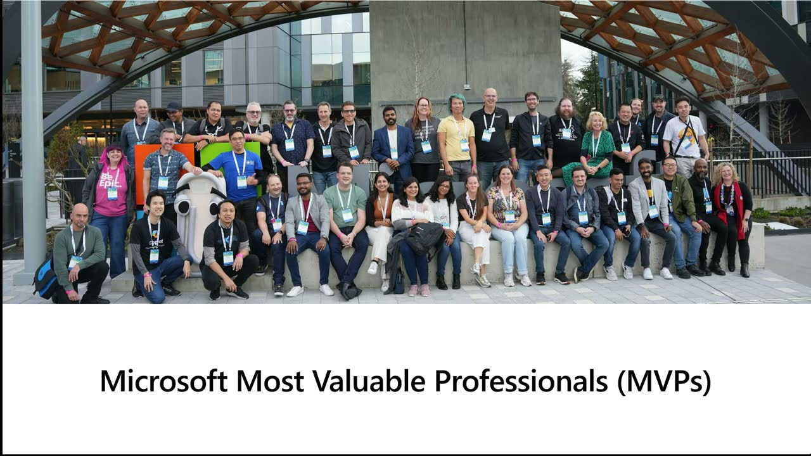
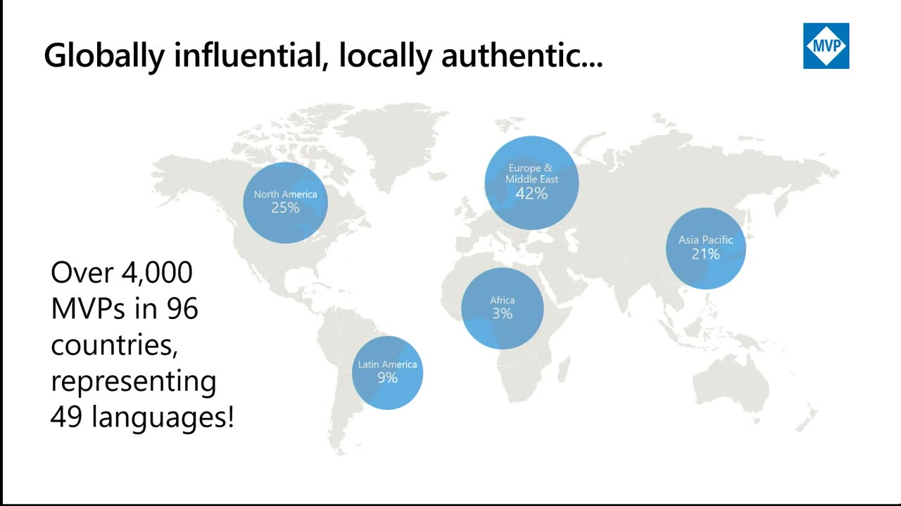
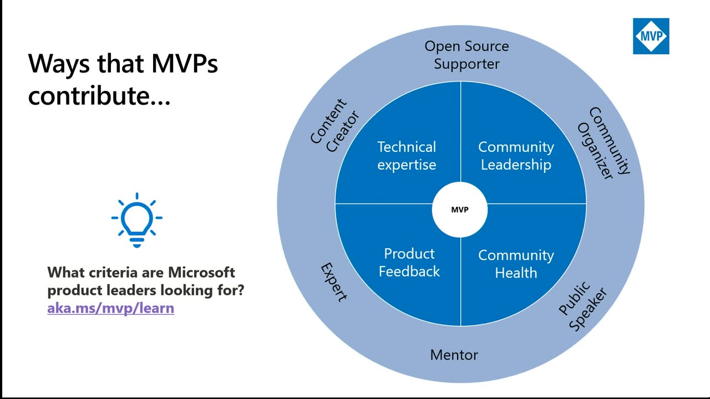
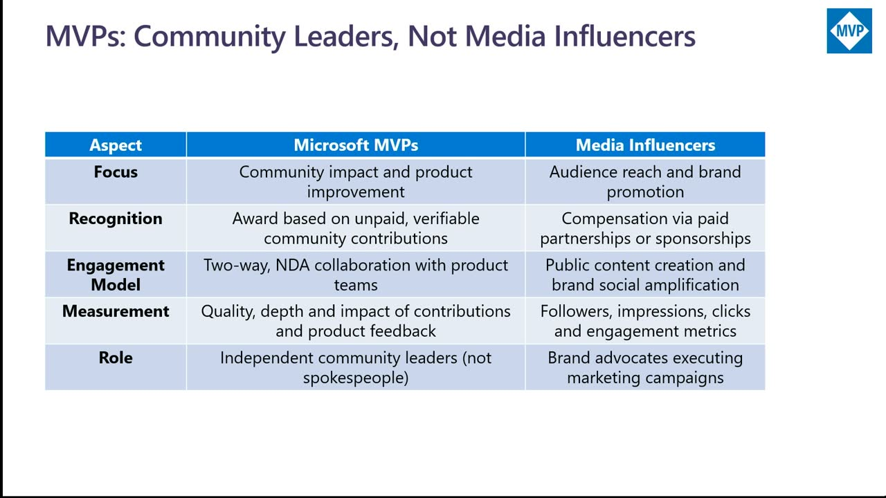
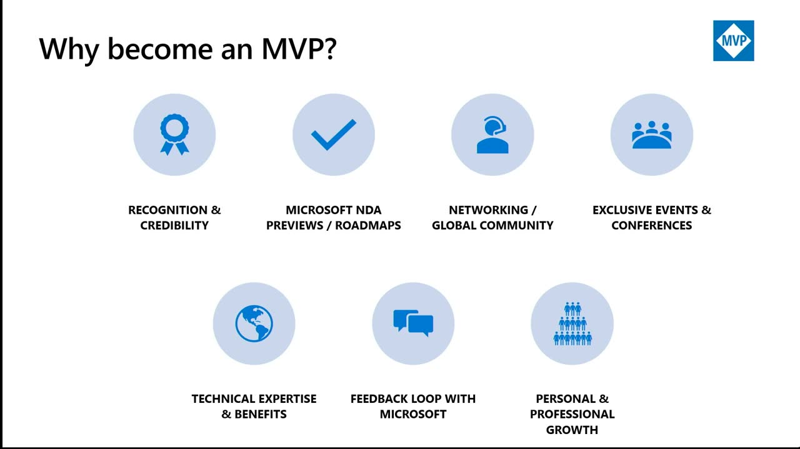
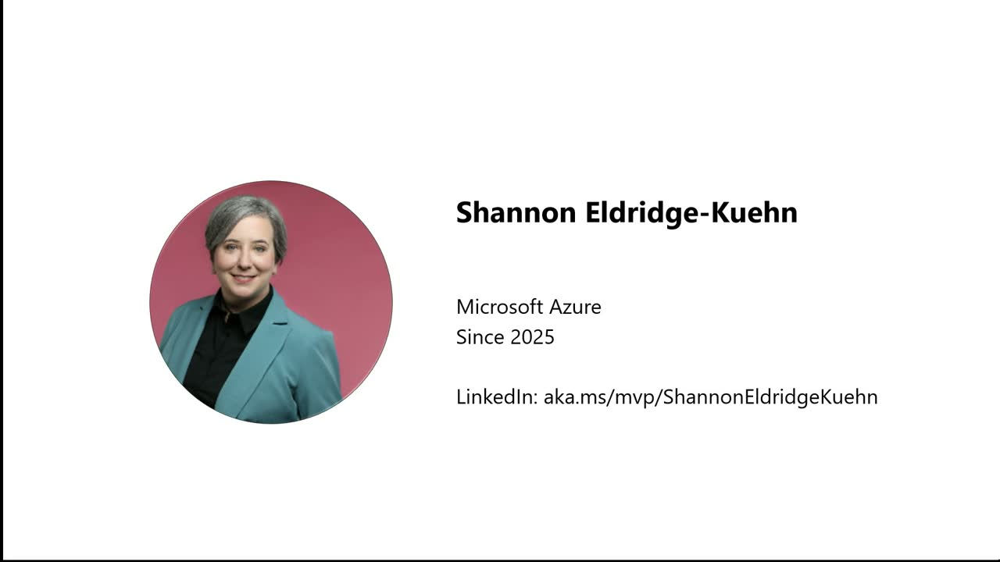
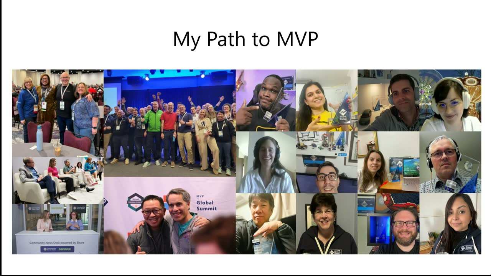
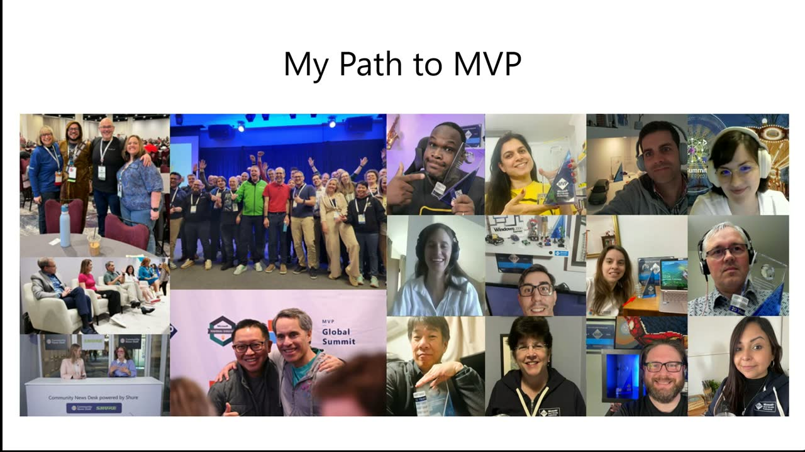
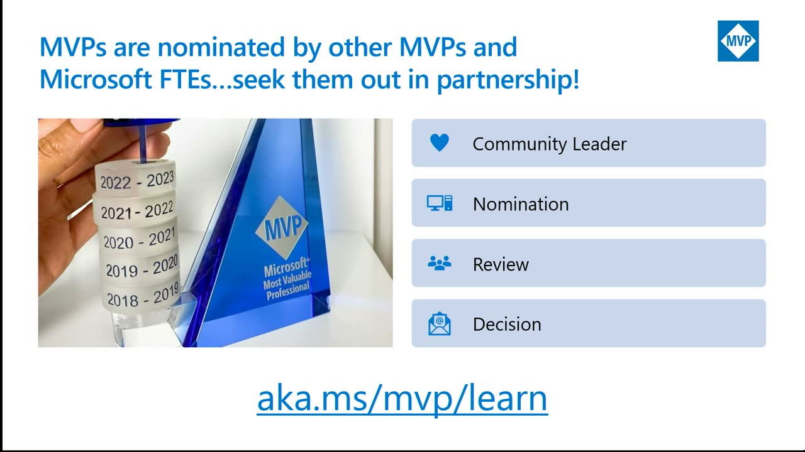

So you want to become an MVP?
Official description
Passionate about sharing knowledge and making an impact in tech? Learn what it takes to become a Microsoft MVP from those who’ve done it and hear directly from MVP Program staff. Discover how to expand your influence, showcase your expertise, and practical tips for getting nominated. Walk away with a roadmap for growing your contributions and positioning yourself for MVP success. Seating for this session is first-come, first-served. Add it to your schedule to plan your day and arrive early to secure a spot.
Summary
Overview
A foundational, panel-style session from Microsoft MVP Program staff and current MVPs explaining what the Most Valuable Professional award is, how the nomination process works, and what community contributions Microsoft looks for. Program leads outline the award's structure and benefits, while two recently awarded MVPs share their paths, advice for newcomers, and how they balance community work with full-time jobs.
Topics covered
- What the MVP award recognizes: external community members who teach others to use Microsoft products and services, are nominated by a Microsoft employee or current MVP, and are evaluated on the prior 12 months of contributions.
- Program scale: 30+ years running, more than 4,000 MVPs across 96 countries, 49+ languages, and 112+ technologies organized into award categories (e.g., M365, developer technologies, Foundry).
- The four contribution pillars the program weighs: technical expertise, community leadership, product feedback, and community health.
- Award benefits: recognition, NDA/pre-release product information, direct product-group feedback channels, a global peer network, and exclusive Microsoft event invitations.
- Forms of contribution (none mandatory): blogging, video, speaking at meetups, organizing events, podcasts, and social sharing—chosen to fit introverts or extroverts.
- Career and personal impact: stronger personal branding, more speaking slots, new job opportunities, customer credibility, and mentorship.
- Practical advice for getting started: pick a technology you are passionate about, offer to help existing community organizers and user groups, seek mentorship, and "learn out loud."
- Work–life–community balance tactics, including calendar Focus Time blocks and flexible weekend contributions.
- The student-to-MVP pathway, including the Microsoft Student Partner program as an entry point.
Notable quotes
"MVPs are community leaders. They are not media influencers. This is not part of their day job." — Betsy Weber
"Human connection is still valuable in this world of agentic everything." — Shannon Eldridge-Kuehn
"Be an expert, do lots of what you love, and let us know." — Betsy Weber
Products and tools mentioned
- Microsoft MVP (Most Valuable Professional) Program
- Microsoft Student Partner program
- Microsoft 365 (M365)
- Exchange Online
- Azure AI Foundry [inferred — Stephen Simon's "Foundry" award category]
- Outlook Focus Time [inferred]
- YouTube
Speakers featured
- Betsy Weber — Senior Engagement Lead, Microsoft MVP Program (10 years at Microsoft)
- Fernanda Herger — Principal Customer Experience Manager (15+ years at Microsoft; former MVP) [transcript mishears surname as "Sariva"]
- Shannon Eldridge-Kuehn — Microsoft MVP since October, consultancy employee and former Microsoft FTE, based in Chicago [transcript mishears surname as "Keen"/"King"]
- Stephen Simon — Microsoft MVP (Foundry category), based in Delhi, India; blogs, makes videos, and speaks at local meetups
- Jeremy Sinclair — listed in session metadata; not individually identified in the transcript
Follow-up resources
- aka.ms/MVP/learn — Microsoft MVP Program main page
Frames
{kind=link}

{kind=link}

{kind=link}

{kind=link}

{kind=link}

{kind=link}

{kind=link}

{kind=link}


{kind=link}

{kind=link}
{kind=link}

{kind=link}

Frames around each announcement
Transcript
Show / hide transcript (35,126 chars)
[00:00:00] To keep. [00:00:01] It silent without. [00:00:03] Further ado. [00:00:03] All right, welcome everyone. [00:00:04] Thank you so much for joining us, taking time out [00:00:07] of your valuable schedule. [00:00:09] We appreciate it. [00:00:10] I'm I'm Betsy Weber, I'm a senior engagement lead with [00:00:14] the Microsoft MVP program. [00:00:16] And this month, I'm celebrating my 10 years at Microsoft. [00:00:20] Yeah. [00:00:20] Congratulations. [00:00:22] Hi, everyone. [00:00:23] My name is Fernanda Sariva. [00:00:25] I'm a principal customer Experience manager. [00:00:28] I know a long title. [00:00:29] It means a lot to me as well. [00:00:30] I've been a little bit over than 15 years at [00:00:33] the company, so a little bit more as well. [00:00:35] And I partnered with BETS as well on engagement with [00:00:38] the Prodigy groups for the MVP award program and prior. [00:00:42] To joining. [00:00:44] Microsoft, you were I was an MVP. [00:00:45] So we are here today to talk a lot about [00:00:48] the MVP program, what it is, how to participate, how [00:00:51] to engage. [00:00:52] We have our amazing friends that accepted to join us [00:00:55] and share a little bit of their experience as well [00:00:58] and I would let Betsy just walk us through now [00:01:00] all. [00:01:01] Right. [00:01:02] So what is the MVP program? [00:01:05] MVP stands for Most Valuable Professional, and this is an [00:01:09] award that Microsoft gives external community members that are out [00:01:13] there teaching others how to use Microsoft's products and services. [00:01:18] They're the ones out there writing books about Microsoft. [00:01:22] They're the ones organizing events, speaking at events, teaching others [00:01:28] how to use Microsoft products and services. [00:01:31] They are passionate about technology, and they have that deep [00:01:35] understanding of it as well. [00:01:37] So this is our way of saying thank you to [00:01:39] our community members. [00:01:40] They don't work at Microsoft. [00:01:42] They have to be in the community. [00:01:45] All right, Fernando. [00:01:45] All right, so where we are in like MVP program [00:01:49] is being around for a little over 30 years now. [00:01:52] So over this 30 years, we learn a lot on [00:01:55] how the community behaves, how the communities grow and, and [00:01:59] actually it's spread around the globe. [00:02:02] We are very proud to say that we have more [00:02:04] than 4000 people these days representing MVP programs in different [00:02:08] geographies. [00:02:09] So we are covering already 96 countries. [00:02:13] Maybe everybody from here already has some MVP that you [00:02:16] get to know or maybe there's already a representation in [00:02:19] your country. [00:02:20] And we have more than 49 languages covered by MVP [00:02:24] program and MVP influences around the world. [00:02:28] So we're very happy to just say that there's always [00:02:31] room for more and we want to continue making those [00:02:34] numbers in communities growing. [00:02:36] So our selections are always make in a way that [00:02:39] we can make sure that contributions are successful and impactful [00:02:43] for Microsoft ecosystem as well As for the local communities [00:02:47] and how they develop. [00:02:49] We're very respectful to culture. [00:02:51] We're very respectful to how we were actually choose to [00:02:54] engage with your community. [00:02:55] I think Abatsa said. [00:02:56] You have a blog, you have a different avenues that [00:02:59] you feel comfortable engaging and that's what we are looking [00:03:02] for. [00:03:03] MVP program is also structured by technologies. [00:03:06] So right now we are cover, we're covering more than [00:03:11] 112 technologies across Microsoft ecosystem. [00:03:15] So those contributions can be related to one or many [00:03:19] of these 100 contributions areas that we have across the [00:03:23] program. [00:03:24] And all those areas are organized by groups that we [00:03:27] call award categories. [00:03:29] So for instance, we have members here that are awarded [00:03:33] by their expertise in M365. [00:03:36] Other members are more focused in development, so likely they [00:03:39] will be aligned to developer technologies and so on and [00:03:42] so forth. [00:03:43] So there's a space for you to just match your [00:03:46] contributions in a variety of products. [00:03:48] And we're very proud to just continue growing this ecosystem. [00:03:53] And, and for this, we have many ways that MVPS [00:03:55] can contribute, but there are specific 4 points that we [00:03:59] always look into the community. [00:04:01] One, of course, we want to showcase your technical expertise. [00:04:05] It's really important that you were you were a known [00:04:08] person that you know your topic that you feel confident [00:04:11] talking about and more so you feel about sharing this [00:04:14] with all others. [00:04:16] This is the kernel of your community and we want [00:04:19] you to continue growing in the your local groups as [00:04:22] best as you can. [00:04:23] And like I said, whatever makes you feel comfortable. [00:04:26] Maybe you like to being in events like that and [00:04:28] participating in sessions and talking to people. [00:04:31] Or maybe you would like to be behind the computer [00:04:34] coding and just like a creating APIs or creating products [00:04:38] or solutions that you can use and share with others. [00:04:42] The best way that you can continue growing is helping [00:04:46] us as a company to improve our products and technologies. [00:04:49] So when you look into the second axis of this [00:04:51] circle, you have the product feedback. [00:04:54] So MVPS are today one of our most strong mechanism [00:04:58] of improvements that are returned to our products in a [00:05:02] form of feedback of how you actually have the real [00:05:05] strategy in your local area. [00:05:08] And you get to know exactly what Microsoft actually means [00:05:11] to your customers based on your experience and how you [00:05:14] can share this back. [00:05:16] And the last but not least, of course, topping this [00:05:19] whole group, you have the community health. [00:05:22] So everybody likes to live in a community that is [00:05:25] successful, in a community that is caring, that makes you [00:05:29] feel part of something bigger. [00:05:31] And the community health is an important aspects that actually [00:05:35] combined with all the other three pillars make a actual [00:05:38] MVP candidate for us. [00:05:40] And we are spread across all this geography. [00:05:43] And I think Betsy can tell a little bit more [00:05:45] about how actually you feel good contributing to this, so. [00:05:49] Fernanda, if I want to be an MVP, do I [00:05:51] have to have a block? [00:05:54] That's not a request that you don't have to, OK? [00:05:57] If I want to become an MVP, do I have [00:05:59] to write a book? [00:06:01] You don't have to write a book, unless This is [00:06:03] why you like it. [00:06:04] Oh, you cannot hear Betsy. [00:06:06] Sorry. [00:06:06] Can you check her microphone? [00:06:08] Can you put close to your mouth, maybe? [00:06:13] Hello. [00:06:13] Hello. [00:06:14] Can you hear me? [00:06:15] Better. [00:06:16] Is it better? [00:06:17] OK, sorry. [00:06:17] Thank you all. [00:06:18] Right. [00:06:18] If you if I want to be an MVP, do [00:06:21] I have to can you have to make videos for [00:06:24] YouTube? [00:06:25] Unless this is what you like to do, no all. [00:06:29] Right, so you don't have to do all the things [00:06:31] to be considered for the MVP award. [00:06:33] We want you to do what you love and contribute [00:06:35] back to the community in the way that you want [00:06:38] to contribute. [00:06:40] MVPS are community leaders. [00:06:42] They are not media influencers. [00:06:45] This is not part of their day job. [00:06:48] They do this in their spare time. [00:06:51] This isn't like what they get paid to do for [00:06:54] their day job. [00:06:55] So this is an award that we give them and [00:06:59] we look back over the last 12 months of their [00:07:02] community contributions and MVPS are nominated. [00:07:06] They have to be nominated by a Microsoft employee or [00:07:11] a current MVP like our MVPS here. [00:07:14] So let's talk about what you will achieve if you [00:07:20] become an MVP. [00:07:23] What's in it for you? [00:07:24] So with the MVP award, you will get that recognition. [00:07:28] Microsoft is saying, hey, you know these products and services, [00:07:32] this is an award that we are giving you. [00:07:36] You'll also get NDA information. [00:07:39] You'll get to learn what's going on with Microsoft products [00:07:42] and services before the public. [00:07:44] You'll get that insider information and you'll be able to [00:07:47] share your feedback with the product groups and say, hey, [00:07:50] this is what I'm seeing out in the field or [00:07:52] this is what I'm experiencing. [00:07:54] And you'll get to help, you know, shape some of [00:07:57] those products and services. [00:07:59] Like Fernandez said, you'll be joining this global community of [00:08:04] 4000 MVPS around the world. [00:08:06] Wherever I travel, likely there's an MVP. [00:08:10] Like, I have friends all over the world that I [00:08:13] can meet up with that, you know, you get to [00:08:15] be a part of this global community, which is so [00:08:18] rewarding. [00:08:19] Hey, Patsy. [00:08:19] Jesse, ready. [00:08:20] Goodnight. [00:08:20] We have more than 100. [00:08:21] That's right. [00:08:23] Think about it. [00:08:24] That's a lot of 100 of our best friends spread [00:08:26] all over this conference. [00:08:28] Yeah, and here at Bill, they're doing lightning talks, they're [00:08:32] in Ask the Experts, they're leading table talks. [00:08:36] You get exclusive invites to Microsoft events, so that's cool. [00:08:44] You also, like I mentioned, you get that direct feedback [00:08:48] and direct connection with the product groups, which is so [00:08:52] valuable, some of the rewards of becoming an MVP. [00:08:57] All right, so enough talking about it. [00:09:00] Us talking about. [00:09:01] It I think that's a lot about let's. [00:09:02] Virtual MVPS. [00:09:03] So Shannon, do you want to introduce yourself? [00:09:05] Hi am I on OK? [00:09:08] I'm Shannon Eldridge Keen and based out of Chicago. [00:09:10] I have been an MVP since October of last year, [00:09:14] so used to be a former Microsoft FTE. [00:09:17] Back to your earlier point, I was a little bummed [00:09:19] out that when I became an employee of Microsoft, I [00:09:21] couldn't become an MVP, so that was a hard lesson [00:09:23] to learn. [00:09:23] So now I am 1, though I'm no longer a [00:09:26] Microsoft FTE and wound up getting the nomination back in [00:09:29] October. [00:09:30] Well, right before October, so. [00:09:34] Awesome. [00:09:35] How about you, Stephen? [00:09:37] So the first thing you know, I'm known by my [00:09:38] last name Simon and I know it's confusing. [00:09:41] So hi everyone, my name is Steven Simon. [00:09:43] I am based out of Delhi, India. [00:09:45] I also got awarded last in the month of October. [00:09:48] But I've been act been active in the community for [00:09:50] almost close to a decade now, right? [00:09:52] I know Shannon, I know Betsy and my award category [00:09:55] is Foundry and I love to write blogs, make videos [00:09:58] and speak at local meet ups. [00:10:02] OK, so why did you get involved in the community? [00:10:07] What led you to even getting started in the community [00:10:10] and giving back to the community? [00:10:13] Why would you? [00:10:14] Why would you? [00:10:14] Do that. [00:10:14] OK, I can go. [00:10:15] I can go first. [00:10:15] So I actually was a cloud advocate for almost 2 [00:10:18] years at Microsoft and that's when I first got the [00:10:21] true exposure of the MVP program. [00:10:23] I love the fact that I got to engage with [00:10:25] folks that weren't part of Microsoft and they were very [00:10:27] passionate about Microsoft technology. [00:10:29] So that was probably the start of it, right? [00:10:31] But again, I was a Microsoft FTE. [00:10:32] Then I moved into the Identity Program group, did a [00:10:35] lot of, I guess you'd call it advocacy for Identity [00:10:37] specifically. [00:10:38] Still not quite an MVP, so starting to really hone [00:10:42] in on video content, blog content, speaking on podcasts, running [00:10:46] campaigns, getting people excited about Microsoft technology. [00:10:50] So it was a natural evolutionary step when I was [00:10:52] no longer on Microsoft FTE to get the nomination. [00:10:55] I did want to have a little bit of a [00:10:57] runway. [00:10:57] So I unfortunately was my, my position was eliminated back [00:11:02] in 2023, right? [00:11:03] And just the nature of the beast, right? [00:11:04] Everything's happening in a very weird world these days. [00:11:07] And then it was one of those things everybody wanted [00:11:09] to nominate me almost immediately. [00:11:10] I said, listen, everything I've done has been Microsoft specific. [00:11:13] I want to have a good runway of content that's [00:11:16] like my own, right? [00:11:17] So I know that's a very passionate element that a [00:11:20] lot of the MVPS stand behind. [00:11:21] And so I wanted to make sure I had a [00:11:23] lot of like my actual personal content. [00:11:24] So that was, I guess, my path to MVP, and [00:11:27] then I know this one because of my time in [00:11:31] cloud advocacy. [00:11:32] So it's been fun to finally meet him. [00:11:35] So my path to MVP started almost like 10 years [00:11:37] back, you know, 10 years back. [00:11:39] I was in my college and then I was a [00:11:41] Microsoft student partner. [00:11:42] It's also a program that's run by Microsoft that really [00:11:45] allowed me to go and attend events in which Microsoft [00:11:48] MVPS used to speak. [00:11:50] And I used to look at them and I really [00:11:52] liked hanging out with the smart people. [00:11:54] And I always thought that once I graduate from the [00:11:56] college, I will become a Microsoft MVP. [00:11:57] But it did took me a while. [00:11:58] I graduated in 2018, but I only got my award, [00:12:01] I think last year. [00:12:03] So over these years, I really worked on myself. [00:12:05] You know, I spoke at events, I, you know, took [00:12:08] guidance from the other MVPS, asked them, you know, how [00:12:11] can I be technical? [00:12:12] How can I help them? [00:12:14] So that eventually led me to become an MVPS. [00:12:16] So for my Microsoft student partner, then some years of [00:12:19] gap, then eventually an MVP. [00:12:21] Well, and then one real quick thing. [00:12:22] I thought you already were an MVP in television. [00:12:24] We actually were both awarded the same month. [00:12:26] So he organized in a global event. [00:12:29] And that's how I wound up getting introduced to Simon [00:12:31] way back when. [00:12:32] It's 20/21/21. [00:12:33] So I thought he was already an MVP. [00:12:35] It was a very hilarious realization that he's been doing [00:12:37] all of this work for a long time to only [00:12:39] get the award last year. [00:12:41] Big conference, right? [00:12:43] It was. [00:12:43] It was. [00:12:44] And what you just said is really interesting because Microsoft [00:12:48] has several programs of evangelism depend on your level. [00:12:52] So sometimes you were still a student. [00:12:54] That might be a program that is specific for your [00:12:56] momentum in life as a student. [00:12:58] Then once you graduate, you have MVP program that can [00:13:02] be a continuation path if you so decide to continue [00:13:06] engaging in the community. [00:13:08] So we're very proud to bring the students over because [00:13:11] we know how important it is to continue this path [00:13:14] of career, especially when you already have Microsoft so into [00:13:17] your day by day. [00:13:18] So I really appreciate your sharing this. [00:13:20] And with that in mind, I know as my experience [00:13:24] previously as MVP, they opened a lot of doors for [00:13:27] me professionally. [00:13:29] So tell me a little bit more you, Simon and [00:13:32] channel as well, what actually changed in your professional and [00:13:36] personal life once you become an MVP? [00:13:39] MVP. [00:13:40] So speaking MVP has really accelerated my career, you know, [00:13:43] so I ended up joining a new company. [00:13:45] So the moment I became an MVP, right, So I [00:13:48] got more recognition. [00:13:49] You know, the best thing is you have a page [00:13:51] on Microsoft and the MVP has a website, right, where [00:13:54] you can put all your contributions to what you have [00:13:57] done. [00:13:57] So if you want to share with somebody, right, Hey, [00:13:59] you know, what have you done with your blogs and [00:14:01] videos so I could share that page. [00:14:03] It has my all category details. [00:14:05] So that really helped me in my personal branding. [00:14:07] Also on top of that being an MVP, right? [00:14:09] You know, you stand out from the crowd. [00:14:11] So when I would now go ahead and apply at [00:14:13] conferences or at speak at events, they would look at [00:14:16] me with the credibility that OK, Simon is in Microsoft [00:14:18] MVP in the Foundry category. [00:14:20] So perhaps, you know, he could do a session at [00:14:22] our conference. [00:14:23] So personal branding, you know, and getting more speaking slots [00:14:27] and also a new job which was really good. [00:14:30] That's so cool. [00:14:31] What about you, Shen? [00:14:32] I'd say it's something. [00:14:34] So I work in a consultancy and a lot of [00:14:36] times people introduce me as this is Shannon Eldridge King. [00:14:39] She's a Microsoft MVP. [00:14:41] I'd never really think of it as anything super awe [00:14:44] inspiring, but I get a lot of compliments from customers. [00:14:46] I know that's very hard to get. [00:14:48] I know that's not an easy thing to wind up [00:14:50] receiving. [00:14:51] So it's a community designation, right? [00:14:52] And so I'd never really think of it as much [00:14:55] until I get the feedback from like customers that I'm [00:14:58] working with, right? [00:14:59] And I don't necessarily start that way. [00:15:01] It's usually somebody else introduces me that way because I [00:15:03] never really think of it as something that could be [00:15:05] an interesting talking point. [00:15:07] But it's brought about a lot of interesting conversations with [00:15:09] those customers, right? [00:15:10] How do you become an MVP? [00:15:11] What's the process? [00:15:12] What's it look like for you? [00:15:14] So for me, it's just mostly getting more of that [00:15:16] human connection, right? [00:15:17] Human connection is still valuable in this world of agentic [00:15:20] everything. [00:15:21] And so that's something I really enjoyed having that conversation [00:15:24] starter. [00:15:26] Excellent. [00:15:27] OK, So if somebody's never been involved in the community [00:15:31] or or active, what advice do you have for somebody [00:15:35] who wants to get involved in the community but isn't [00:15:38] involved yet? [00:15:39] Do you have any advice for them? [00:15:43] I'd say pick something you're passionate about writing video, maybe [00:15:47] just retweeting, re sharing right? [00:15:49] A lot of us, you're not, you're not supposed to [00:15:51] tweet anymore. [00:15:52] It's, I don't know what it's called these days, but [00:15:55] it's the whole notion of sharing content, right? [00:15:57] Establishing connections, dropping people a line, mentioning, hey, I like [00:16:01] that one blog you wrote. [00:16:02] I really thought it was impactful. [00:16:04] I'd love to collaborate. [00:16:06] And then that opens up doors for a podcast that's [00:16:08] opened up doors to speak at events. [00:16:10] So find whatever you're passionate about, right? [00:16:12] Find the actual technology that you enjoy the most. [00:16:15] Figure out what you'd like to do. [00:16:16] Again, there are extroverts and introverts in the program. [00:16:19] So if you're more introverted, maybe writing's your thing. [00:16:21] If you're more extroverted, speaking at events and then getting [00:16:24] that, like mentorship. [00:16:25] Mentorship is a big part of the MVP program. [00:16:28] And so I'm constantly mentoring folks over the course of, [00:16:30] not only to get into the MVP program, but just [00:16:32] becoming technical and being a technical thought leader. [00:16:35] So I think of it like that. [00:16:38] So, so, you know, the way I got involved with [00:16:41] the committee is, you know, I think, you know, this [00:16:43] MVPS are the community leaders, right? [00:16:45] It's not really easy because you have to do a [00:16:47] lot of work not to write blogs sometime, you know, [00:16:49] it can be overwhelming. [00:16:51] So people need help. [00:16:52] So the way I did is I would reach out [00:16:54] to the MVPS or the other community organizers that hey, [00:16:57] you're putting up an event, how can I help you [00:16:59] out? [00:16:59] So I think if you reach out to the people [00:17:01] that hey, if you need any help, right, and which [00:17:04] is very good, I think you know that is that [00:17:06] is a good thing. [00:17:07] Right. [00:17:08] How can I help you? [00:17:09] Yeah, how can. [00:17:10] There you go. [00:17:10] How can I help you? [00:17:11] I feel. [00:17:12] So good. [00:17:12] Yeah, right. [00:17:13] I love that and a lot of MVPS. [00:17:16] Not all, but several run user groups. [00:17:18] And I know user groups are always looking for speakers [00:17:21] and they're always looking for help. [00:17:23] So great advice. [00:17:23] I love that, yeah. [00:17:24] It's always good to give like a starting point, especially [00:17:27] for those that show sometimes I have never heard about [00:17:30] anything. [00:17:31] I have no idea what community means. [00:17:32] I just heard about this meet up. [00:17:34] I heard about this user group could be a good [00:17:36] starting point and I really appreciate what you guys doing [00:17:39] to bring them over this journey. [00:17:41] So with that, I feel like what is the most [00:17:44] rewarding part of being an MVP because and I really [00:17:47] want to see different perspectives. [00:17:49] What you gain from Microsoft, where you gain from the [00:17:51] community. [00:17:51] Tell me a little bit more. [00:17:54] For me, the most rewarding part is, you know, since [00:17:56] I was a micro student partner and then, you know, [00:17:58] since I started doing meet ups in my city, you [00:18:01] know, there were some folks who were very reluctant even [00:18:03] to just join the meet ups. [00:18:05] So right, they would say, I'm not sure if this [00:18:07] meet up is for me. [00:18:08] They're all the smart people there, right? [00:18:11] Do, you know, encouraging them to be a part of [00:18:13] the community then, you know, telling them how they can [00:18:16] write their very first blog, how they can do their [00:18:19] very first speaking, then watching them on their very first [00:18:22] the the certificates and then eventually, you know, looking at [00:18:26] them become an mics on MVP, right. [00:18:27] So I think that was very rewarding, you know, looking [00:18:30] at the other people's journey where they felt they do [00:18:33] not belong to the community and eventually, you know, getting [00:18:36] rewarded for this was something I really, you know, love [00:18:38] to experience that part. [00:18:40] I think it was the connection to the network, right? [00:18:43] It's this network of resources that are very smart across [00:18:45] the entire Microsoft ecosystem. [00:18:47] Getting connected to that network, there's a lot of inspiration [00:18:51] you can draw from folks that are even not in [00:18:53] the area you focus in on. [00:18:54] So last night I had a couple conversations about M365. [00:18:58] In a former life, I used to support Exchange Online [00:19:00] and M365 in that whole suite of products. [00:19:03] I haven't for a very long time, but it was [00:19:04] super fascinating hearing what they're working on, right? [00:19:07] So the idea of networking as well as you did [00:19:09] bring it up, but you weren't on your mic. [00:19:11] The MVP award you actually get, right? [00:19:14] And you can designate like you get, you know, the [00:19:16] first year you get the base and you get year [00:19:18] one and each year you get your renewal, you get [00:19:20] an additional. [00:19:21] I think it's a ring. [00:19:22] Is that what they call it? [00:19:23] Is it up there? [00:19:24] Yeah, it's. [00:19:24] Right up there. [00:19:24] Yeah, it's right there. [00:19:26] So having that was kind of an awesome hashtag achievement [00:19:29] unlocked for me. [00:19:30] So between the network getting the actual award, I was [00:19:34] pinching myself. [00:19:35] Is this real life? [00:19:37] That's a lot of work. [00:19:39] I love that. [00:19:40] OK, so work life community balance, right? [00:19:44] You have a full time job, you have a life. [00:19:48] How do you balance community? [00:19:54] I put blocks in my personal, no, my professional calendar, [00:19:58] but I don't block a whole day off, right. [00:20:00] I'll use focus time. [00:20:01] And I don't know if you're familiar with focus time. [00:20:03] If you're not, turn it on. [00:20:05] It'll look for two contiguous hours. [00:20:07] If it can't, it'll give you an hour block and [00:20:09] it'll look for an hour later in the day, but [00:20:11] it'll block that time. [00:20:13] So I use it as either time to contribute back [00:20:15] to the community, time to learn a tech, time to [00:20:18] go and experiment with something. [00:20:20] So that's something I do during the work. [00:20:22] Day and again, it's one of those things that's encouraged [00:20:25] by my job so I'm not necessarily being an awful [00:20:27] employee. [00:20:28] I'm just trying to be a technical person in this [00:20:30] world that we live in when everything's changing so quickly. [00:20:33] Often times I'll also if like I don't get to [00:20:35] the free time, right, the focus time because something stomped [00:20:38] on that time. [00:20:39] I'll try to find some time, maybe over the weekend, [00:20:42] right? [00:20:42] Maybe put the kid to bed earlier. [00:20:44] And then I have a little bit extra time and [00:20:46] I try to factor in the right balance so that [00:20:49] I'm not, you know, working a ton, missing out on [00:20:52] life. [00:20:52] You know, it's a balance, though. [00:20:54] It's a balance act. [00:20:55] Well, for me it's not tough because neither I'm married [00:20:58] nor I have a girlfriend. [00:20:59] So, you know, managing time is not tough for me. [00:21:02] But you know. [00:21:03] Maybe that'll change. [00:21:04] Yeah, it will change. [00:21:05] I'm getting old. [00:21:07] So, you know, the way I manage is, you know, [00:21:09] I during the weekdays, let's say I worked for a [00:21:11] couple of hours, then I kind of take a break. [00:21:14] You know, I refresh myself, I'll go and maybe, you [00:21:16] know, watch a video or maybe I'll just write a [00:21:18] couple of paragraphs for the vlog. [00:21:20] And then over the weekends, you know, I just go [00:21:22] out, carry my laptop when if I'm attending an event, [00:21:25] you know, I'll just maybe I start writing blogs there. [00:21:28] So I'm kind of flexible, right, with with my contributions [00:21:31] over the weekdays and weekend. [00:21:32] I don't block anything, right, Because I'm free, right? [00:21:36] So yeah, I'm flexible with my. [00:21:39] Do you want some meetings? [00:21:42] And I think it does important, like you really establish [00:21:45] this because every working community is not meant to be [00:21:48] a burden, is not meant to be something that you'll [00:21:51] forcefully do and something that naturally happens. [00:21:54] So it has to be something like, So I love [00:21:56] that you guys like, oh, I learned something. [00:21:58] Why not write something right now while it's too fresh [00:22:01] instead of like, Oh my God, I have to do [00:22:03] this and be something taxing and painful is exact what [00:22:06] you're not looking for. [00:22:08] So thanks so much for sharing your experience with us. [00:22:11] We really appreciate that all. [00:22:15] Right. [00:22:15] So how do you become an MVP? [00:22:19] Well. [00:22:20] What is the secret sauce? [00:22:22] It's very simple, right? [00:22:24] Be an expert, do lots of what you love and [00:22:28] let let us know the MV PS I see who [00:22:32] get awarded year after year. [00:22:35] It's a year long award are the ones that do [00:22:37] what they love and they would continue doing what they [00:22:41] love regardless of the award. [00:22:43] That's just what they do naturally. [00:22:44] Somebody helped them when they were learning and they want [00:22:47] to help others and give back, right. [00:22:49] So there's not a long checklist to become an MVP. [00:22:53] So when you're nominated, you're nominated by a current MVP [00:22:58] or a Microsoft employee. [00:23:00] We look back over the last year of your contributions [00:23:03] to the community. [00:23:05] So we look at the different ways that you are [00:23:08] contributing to that community, right? [00:23:10] So Fernanda, you brought up a great point. [00:23:13] If you're learning something new, why not share and learn [00:23:16] out loud, right? [00:23:17] Why? [00:23:17] Not yeah, absolutely. [00:23:19] Make a quick video, make a blog post about it. [00:23:22] There's a lot of how to documentation out there. [00:23:25] A lot of it's done by Microsoft, but share what [00:23:28] you're experiencing or what your clients are running into and [00:23:31] how you solve things like. [00:23:32] That's a great way to share what you're learning. [00:23:35] And Betsy, do I need to be an expert or [00:23:37] can I be? [00:23:38] What levels of knowledge should I be covering? [00:23:40] Just the pro ones or? [00:23:42] It is a technical award. [00:23:43] So you do need to, you do need to know [00:23:46] the tech, right? [00:23:48] But I would, you know, look for your unique identity, [00:23:51] build that personal brand and and share your knowledge with [00:23:55] others. [00:23:56] Yeah, absolutely. [00:23:57] And you can write for think about your audience. [00:24:00] We look for things that can help even those that [00:24:03] are still starting technology and you can also be helping [00:24:06] those that are ready in a in a advanced career [00:24:09] path in their in their journey. [00:24:11] So we really want to understand how you're building your [00:24:13] community, how you're sharing your knowledge and how you're helping [00:24:16] others to grow. [00:24:17] So I feel like the message behind that, it's just [00:24:20] like if you're writing for those that have no knowledge [00:24:23] about when you also writing for those that are already [00:24:26] experts, we are going to value your contribution the same [00:24:29] way. [00:24:29] What really matters is how you actually build up your [00:24:31] community. [00:24:33] I think we are reaching the end of our presentation. [00:24:35] So if you would like to learn more about MVP [00:24:39] program, we have our main page. [00:24:42] You can reach at AKA dot MS/MVP slash learn or [00:24:46] you can just go to the keyword code. [00:24:49] And we really appreciate your joining us today. [00:24:52] Yeah. [00:24:53] Thank you everyone. [00:24:54] We appreciate.